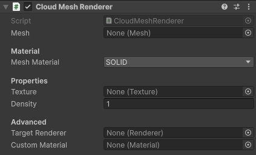

Cloud Mesh Renderer
Renders a mesh or a renderer to the Base Texture.
Inspector Settings

Mesh
The mesh to render. If you're trying to use a Renderer (like a Skinned Mesh Renderer), use the Target Renderer field instead.
Mesh Material
Select between a few options for mesh material to use to render to the screen.
- SOLID will render the mesh as a single color, determined by the texture and the density field.
- You can use a quad mesh and this option to render images with minimal effort.
- VOLUME will render the inside of the mesh as a volume with constant density.
- The density field is used as density per meter, consider using a very small value for cloud-sized meshes.
- The texture field is not used.
- CUSTOM
- To use a custom material, use this option.
- The material can use one of the included shaders, or a completely new one.
For both SOLID and VOLUME, you probably want to enable the Base Blur, especially for SOLID.
Texture/Density
Properties given to the material, how each material uses these properties has already been explained above.
Keep in mind that these properties are not used when rendering a Renderer due to a lack of material property blocks for cmd.DrawRenderer. The material itself could be modified, but the component shouldn't assume it has exclusive ownership of any materials.
Target Renderer
A Renderer component to render instead of the given mesh. When null, it's ignored and the mesh is rendered as usual instead.
If rendering a Skinned Mesh Renderer (which is the reason this option exists), don't disable the component/object, as that'll make them not update. Instead, set "Rendering Layer Mask" to "Nothing", which will cause it to not be rendered by anything while still updating properly.
Refer to the "Meshes" demo for an example.